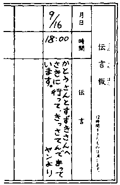

（1）
自分
（例）これは 千円です。
千円
| （例） | ● | ② | ③ | ④ |
問1 自分で 旅行を 計画するのは 楽しいです。
問2 その 学生は 毎日 地下鉄で 大学に 通って います。
問3 姉が いつも 食事の 用意を して くれます。
問4 電話代は 夜の 間と 日曜日が 安いです。
問5 この 町の 人口は 去年より 多く なりました。
問6 その 店の 主人は いつも 着物を 着て います。
（例）げつようびに 行きました。
げつ
| （例） | ① | ② | ● | ④ |
問1 この へやは あかるくて ひろいので、しごとが しやすいです。
問2 えきの ばいてんで しんぶんを かいました。電車の せきが あいて いなかったので たったまま よみました。
問3 音楽会は 7時に はじまります。きゅうこう電車で いかなくても まにあいますよ。
問4 毎日 漢字を 15ずつ ならいます。こくばんの 字を ちゅういしながら ノートに うつします。
（例）____でも のみませんか。
| （例） | ① | ● | ③ | ④ |
（例）こんばん テレビを みます。
| （例） | ① | ② | ③ | ● |
（例）わたしは まいあさ しんぶん____ 読みます。
| （例） | ① | ② | ● | ④ |
（例）わたしは まいあさ コーヒーを ____ます。
| （例） | ① | ● | ③ | ④ |
〈会話1〉
〈会話2〉
（例）
安売りの おしらせ
せっけんは 水曜日、さとうは 金曜日です。やさいは 木曜日です。魚と にくと たまごは 月曜日です。チーズと バターは 土曜日と 日曜日です。
【しつもん】この みせの 安売りの ない 日は 何曜日ですか。
| （例） | ① | ● | ③ | ④ |
（1）

リーさんは どんな ところへ 行きたいと 言って いますか。
行きたいと 言って います。
（4）
工場見学の おしらせ
あしたは 11時から 自動車工場の 見学です。学校を 10時に 出発できるよう 10分前に あつまって ください。あつまる 場所は 南門です。
（6）きのう 母を おくりに くうこうへ 行った。デッキで 母が のった ひこうきが とんで いくのを じっと 見て いたら、国へ 帰りたく なった。
ヤンさん、9月10日の お手紙、今日 着きました。毎月 月はじめに 着く お手紙が 今月は 10日を すぎても 来ません。それで、日本語の べんきょうが いそがしいのか、病気を したのかと むすめと 話を して いました。
お手紙を 読んで ほんとうに びっくりしました。じこの 後、すぐに 病院で よく しらべたそうですが、ほんとうに もう だいじょうぶなのですか。9月22日には しごとで 東京へ 行きます。その 後で あなたの アパートへ 行きたいと 思います。じこの こと、けがの ようす、その 後の ことを もっと 知りたいと 思います。電話では よく わかりませんでしたからね。そして、あなたの 元気な かおが 見たいです。ですから、その 日の つごうは どうか、電話で 知らせて ください。夜なら いつでも 家に いますから。
とにかく、雨の 日に かさを さして 自転車に のる ことは もう 二度と しないで くださいね。では、22日に 会いましょう。おだいじに。
9月12日
京都市 山田 よし子
Cases & principal differences →ヤンさんの 手紙が おそく なったのは どうしてですか。
ヤンさんが